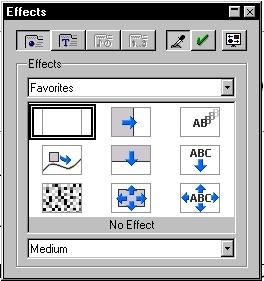

FAQ: Impress
Oorspronkelijke auteur: Scott Carr
Vertaling, samenstelling en bewerking: Nolly
Toenders
Aanpassing layout, aanvulling: Simon Brouwer
Laatst gewijzigd: September 2003
 IMPRESS: VRAGEN IMPRESS: VRAGEN 
- Hoe
voeg ik verschillende achtergronden in in een presentatie?
- Hoe
verplaats ik een dia uit een OpenOffice.org presentatie naar een andere
OpenOffice.org presentatie?
- Als
ik knip en plak van een tekstdocument naar een OpenOffice.org
presentatie, wordt de tekst in een compleet andere tekstgrootte geplakt
dan de originele grootte. Hoe behoud ik de tekstopmaak?
- Hoe
creëer ik kop en voettekstinformatie in een OpenOfice.org presentatie?
Ik wil mijn informatie tonen op elke dia.
- Hoe
kan ik twee dia's per pagina (onder elkaar) printen vanuit Impress?
- Ik
heb een MS PowerPoint 97 .PPZ bestand geproduceerd gebruik makend van
"Inpakken en wegwezen". Kan dit bestand geopend worden in Presentation
Impress?
- Hoe
wijzig ik de opmaak van een datumveld in Impress?
- Hoe
creëer ik mijn eigen presentation Impress sjabloon?
- Ik
heb een presentatie met lichte tekst op een zwarte achtergrond. Als ik
de tekst print, wil ik graag zwarte tekst hebben op een witte
achtergrond. Is dat mogelijk?
- Hoe
print ik de notities met de dia's op dezelfde pagina in OpenOffice.org
Presentation? Ik selecteer beide tekening en notities om te printen,
maar de dia's worden eerst geprint en de notities achteraf op
verschillende pagina's (tweemaal het aantal pagina's dat ik wil)?
- Ik
nummer mijn dia's, maar ik wil het pagina/dia nummer niet tonen op de
eerste dia, omdat dat mijn titeldia is. Is dit mogelijk?
- Ik
wil graag liggende en staande dia's in mijn presentatie. Is dit
mogelijk?
- Ik
tracht een presentatie te exporteren naar HTML. Ik krijg een
foutbericht dat zegt Nietbestaand object. Nietbestaand bestand. Wat is
er verkeerd?
- Hoe
voeg ik Teksteffecten toe aan een tekstvak?
- Waar
haal ik in templates/sjablonen voor Impress vandaan ?
IMPRESS: ANTWOORDEN
- Hoe voeg ik
verschillende achtergronden in in een presentatie?
Volg deze stappen in OpenOffice.org:
- Selecteer de dia waarvan je de achtergrond
wil veranderen
- Kies Opmaak > Sjablonen
> Paginaopmaak-profiel
- Klik op de knop Laden
- In het dialoogvenster Pagina-opmaakprofiel
laden kies je linksboven in het kader Bereiken
> Presentatie-achtergronden of Presentaties
- Rechts in het kader verschijnen de
verschillende sjablonen, klik een sjabloon naar keuze aan en klik op OK
- Het nieuw gekozen pagina-opmaakprofiel is
actief (zwart omkaderd), klik op OK
Opmerking 1: Om de
achtergrond van alle dia's te wijzigen, door gebruik te maken van een
sjabloon, schakel je in stap 6 de optie Achtergrondpagina
wisselen in.
Opmerking 2: Afhankelijk
van welke sjablonen zijn geleverd bij de distrubitie die je gebruikt,
zullen niet alle categorieën van achtergrond-sjablonen beschikbaar
zijn. Herhaal bovenstaande stappen voor alle individuele dia's in je
bestand.
Noot: Deze
instructies zullen alleen werken als je Impress sjablonen hebt
gedownload of zelf hebt gemaakt.
- Hoe verplaats ik een
dia uit een OpenOffice.org presentatie naar een andere OpenOffice.org
presentatie?
- Open de bestemmings presentatie in
OpenOffice.org Impress, zorg ervoor dat je je in de paginamodus
bevindt
- Selecteer Invoegen >
Bestand
- Blader om de bron presentatie te vinden,
bijv. ‘jouw_bestand.sxi’
- Selecteer Invoegen
- In het dialoogkader zie je nu de
bestandsnaam van de presentatie, klik op het +-teken
dat er voor staat. De dia’s staan nu onder elkaar
- Selecteer het dianummer dat je wilt hebben
en klik op OK, de dia wordt ingevoegd achter de actieve dia
Het is ook mogelijk om via de
Diasorteerweergave een dia te verplaatsen/kopiëren:
- Selecteer de dia, die je wilt kopiëren in
het bronbestand
- Kopiëren
- Open het doel bestand in de diamodus
en selecteer een dia waarachter de nieuwe dia ingevoegd moet worden
- Plakken
- Als ik knip en plak
van een tekstdocument naar een OpenOffice.org presentatie, wordt de
tekst in een compleet andere tekstgrootte geplakt dan de originele
grootte. Hoe behoud ik de tekstopmaak?
Als de tekst in een OpenOffice.org presentatie
geplakt wordt, wordt de grootte van het lettertype gewijzigd in de
standaard object stijl. Wijzig de standaard stijlopmaak in de voorkeur
stijl en plak dan de tekst in je presentatie.
- Hoe creëer ik kop en
voettekst informatie in een OpenOffice.org presentatie? Ik wil mijn
informatie tonen op iedere dia.
- Ga naar de achtergrondmodus
(er zijn drie kleine iconen onder de verticale liniaal aan de linker
kant – het middelste icoontje is de Achtergrondmodus - het lijkt op een
doos met een donkere onderrand)
- Tekst in voeren, bijvoorbeeld: klik op de
knop met de grote T op de werkbalk aan de
linker rand van het scherm
- Maak een tekst invoergebied in je
presentatie door je muis te slepen in je voorkeur richting/ruimte, type
de tekst
Als je een pagina/dia nummer wilt invoegen:
- Zorg ervoor dat je je nog steeds in de achtergrondmodus
bevindt
- Klik op de dia waar het nummer moet komen
- Selecteer Invoegen >
Veldopdracht > Paginanummer
Opmerking 1: De
lettergrootte kan gewijzigd worden door de stijl van de tekst te
wijzigen.
Opmerking 2: Er is geen
optie voor het totaal aantal pagina’s/dia’s, hoewel, als je in wilt
voeren Pagina X van N, dan kun je het totaal aantal pagina's (van N)
zelf handmatig intypen. Let op bij wijzigingen van het aantal pagina's!
Als je klaar bent met het invoeren van tekst/logo’s/etc. in de achtergrondmodus,
dan klik je op het meest linkse icoontje onder de linker liniaal. Dit
icoontje heet de paginamodus en je keert
terug naar de normale pagina-opmaak. Elke dia in je presentatie bevat
nu de gegevens, die ingevoerd zijn in de achtergrondmodus.
- Hoe kan ik twee dia's
per pagina (onder elkaar) printen vanuit Impress?
Volg deze stappen:
- Wissel naar de folder(handout)modus
(vijfde knop naar beneden aan de rechter rand van het scherm of Beeld
>Werkvenster >Foldermodus)
- Zorg dat de Presentatie-werkbalk op je
scherm staat (Werkbalk inschakelen met: Beeld > Werkbalken
> Presentatie)
- Klik op Pagina lay-out
wijzigen op de Presentatie-werkbalk, kies het icoon Naast
elkaar twee dia's per pagina en klik op OK
Opmerking: je moet in de achtergrondmodus
zijn voor handouts. Als je op het knopje foldermodus klikt, kom je
automatisch in de achtergrondmodus.
- Kies Opmaak > Pagina,
klik bij Papierformaat de uitlijning op Staand
aan en klik op OK
- Sleep de dia's zo dat zij boven elkaar
staan
- Klik op de bovenste dia en klik op Opmaak
> Positie en grootte, klik Synchroniseren
aan (om proportioneel te verkleinen en/of te vergroten), type 10 cm
voor de breedte in en klik op OK
- Herhaal stap 6 voor de onderste dia
- Sleep de dia's zo, dat zij in de linker
bovenhoek en de rechter onderhoek in een lijn staan met de de boven en
onder marge
- Shift-klik om beide dia's te selecteren,
klik met de rechter muisknop op de selectie (voor het snelmenu) en kies
Uitlijning > Gecentreerd
(let op: niet midden!)
- Als beide dia's nog zijn geselecteerd dan
kunnen de dia's naar links of rechts gesleept worden
Bijkomende opties:
- Gebruik het lijn-werktuig om een
horizontale lijn tussen de dia's te trekken.
- Kies Invoegen >
Veldopdracht > Paginanummer om een paginanummer
op iedere pagina in te voegen.
Opmerking: wees er zeker van dat je de dia's nummert,
Dia 1, Dia 2 etc. om verwarring te voorkomen tussen Dia # en Pagina #.
- Sleep het nummer naar de goede plaats op de
pagina en wijzig dan de puntgrootte in 10 (het is gemakkelijker om het
nummer te verplaatsen als de puntgrootte groter is)
Handouts printen:
Het is nodig om de printeropties voor Impress
in te stellen.
- Kies Bestand >
Afdrukken en klik op de knop Overige
- In het vak Inhoud,
schakel Folder in door op het
selectievakje ervoor te klikken. Schakel het selectievakje voor Tekeningen
uit door erop te klikken om te vermijden dat beide worden geprint
- klik op OK en klik opnieuw OK om te printen
In dit dialoogkader kun je ook keuzes maken
omtrent een overzicht en notities printen.
Je kunt terug keren naar de tekeningmodus, klik op het eerste knopje
aan de rechter rand van het scherm.
- Ik heb een MS Office
PowerPoint 97 .PPZ bestand geproduceerd gebruik makend van de optie
'Inpakken en wegwezen'. Kan dit bestand geopend worden in Presentation
Impress?
Nee, .PPZ formaat bestanden worden niet
gesupport in welke applicatie dan ook. In plaats daarvan:
- Open het bestand in MS PowerPoint 97 en
selecteer: Bestand > Opslaan als
- Aan de onderzijde van het dialoogkader, zie
je de optie Opslaan als
- Selecteer MS PowerPoint 97
.ppt
- Het .ppt bestand (het resultaat) kan
geopend worden in OpenOffice.org Impress
- Hoe wijzig ik de
opmaak van een datumveld in Impress?
- Selecteer eerst de datum. Klik driemaal
(snel) op de datum om de datum te selecteren
- Klik met de rechter muisknop op de selectie
om het snelmenu te activeren
- Selecteer de datumopmaak uit de keuzes van
het snelmenu
- Hoe creëer ik mijn
eigen presentation Impress sjabloon?
Volg deze stappen:
- Maak de sjabloon-dia in de achtergrondmodus
in presentation Impress
- Ga terug naar de pagina-modus (zie hierover
ook vraag 4). Als
de dia klaar is, selecteer in de menubalk Bestand
> Sjabloon > Opslaan
- Als je je eigen map wilt maken voor het
opbergen van je eigen sjablonen (advies), klik op de knop Beheren
- In het dialoogkader dat verschijnt,
selecteer je de knop Opdrachten > Nieuw
Opmerking: als Nieuw
niet beschikbaar is, klik dan in het dialoogkader Sjabloon
beheren in het meest linkse kader op de map Standaard
- In het linker kader wordt een nieuwe map
aangemaakt met de naam Naamloos
- Type meteen een nieuwe naam voor de map en
druk op de ENTER-toets om de naam te bevestigen, bijv. Mijn_sjablonen
- Klik op Sluiten
- In het Sjablonen
dialoogkader, aan de linkerkant, zie je de Bereiken.
Zorg ervoor dat je nieuwe map is geselecteerd
- Boven in het venster in het veld Nieuw
Sjabloon, geef je een naam in voor je sjabloon
- Klik op OK
Als je een nieuwe presentatie maakt, zal je
nieuwe sjabloon beschikbaar zijn voor selectie.
Opmerking: Bestand > Nieuw
> Sjablonen en documenten,. klik links op het
icoon Sjablonen. Je ziet nu de gemaakte
map met daarin je eigen sjablonen.
Noot: Op schijf
is het pad: C:\Program
Files\OpenOffice.org1.0\user\template\Mijn_sjablonen
- Ik heb een
presentatie met lichte tekst op een zwarte achtergrond. Als ik de tekst
print, wil ik graag zwarte tekst hebben op een witte achtergrond. Is
dat mogelijk?
Ja, volg de volgende stappen:
- Klik op Bestand >
Afdrukken
- Klik linksonder op de knop Overige
- Klik bij Weergavekwaliteit Zwart-Wit
aan
- Klik op OK
- Stel het afdrukbereik in en klik op OK
- Hoe print ik de
aantekeningen met de dia's op dezelfde pagina in OpenOffice.org
Impress? Ik selecteer beide tekening en aantekeningen om te printen,
maar de dia's worden eerst geprint en de aantekeningen achteraf op
verschillende pagina's (tweemaal het aantal pagina's dat ik wil)?
Het is nodig om de printopties voor
presentations in te stellen.
- Selecteer op de menubalk Extra
> Opties
- In het dialoogkader dat verschijnt, ga je
naar Presentatie > Afdrukken in
het linker kader
- In het vak Inhoud,
schakel je Aantekeningen in door op het
selectievakje ervoor te klikken. Schakel het selectievakje voor Tekeningen
uit door erop te klikken en te vermijden dat beide, de dia en de
aantekening op verschillende pagina's worden geprint
- Klik op OK
In dit dialoogkader kun je ook keuzes maken
omtrent een overzicht en handsouts printen.
Let op: de
defaultwaarde bij de printopties is nu gewijzigd.
Om eenmalig de printopties te
wijzigen:
- Klik op Bestand >
Afdrukken
- Klik linksonder op de knop Overige
- In het vak Inhoud,
schakel je Aantekeningen in door op het
selectievakje ervoor te klikken. Schakel het selectievakje voor Tekeningen
uit door erop te klikken en te vermijden dat beide, de dia en de
aantekening op verschillende pagina's worden geprint
- Klik op OK
- Stel het afdrukbereik in en klik op OK
- Ik nummer mijn
dia's, maar ik wil het pagina/dia nummer niet tonen op de eerste dia,
omdat dat mijn titeldia is. Is dit mogelijk?
Het is mogelijk om de inhoud van een dia te
verbergen met de volgende procedure:
- Dubbelklik op de dia-naam tab van de dia
die je wilt wijzigen (de eerste, in dit geval)
- Het dialoogkader Pagina-lay-out
wijzigen verschijnt, deselecteer het afvinkteken in het
selectievakje van Objecten op de achtergrond
in het vak Weergeven
Het is niet mogelijk het
paginanummer veld te wijzigen. Dus je tweede dia zal altijd '2' zijn -
je kan het niet herstarten met nummer '1'.
Let op: Alle
objecten worden van de achergrond verwijderd.
- Ik wil graag
liggende en staande dia's in mijn presentatie. Is dit mogelijk?
Voorzover wij weten, is dit niet mogelijk in
OpenOffice.org Impress. Staande en liggende pagina oriëntatie kan
gecombineerd worden in tekstverwerkingsdocumenten (zie Writer FAQ).
- Ik tracht een
presentatie te exporteren naar HTML. Ik krijg een foutbericht dat zegt Nietbestaand
object. Nietbestaand bestand. Wat is er verkeerd?
Dit bericht is enigszins algemeen en het kan
een indicatie zijn van een of meer problemen. Lees alsjeblieft de
complete lijst, hieronder, om te bepalen of er een van deze zaken aan
de hand is.
Exporteren naar HTML Vereist Map
Schrijven Toegang (Schrijfbevoegdheid) De Export naar HTML
bewerking, hiervoor is schrijfbevoegdheid nodig van een nieuw bestand
of bestanden naar de map die je hebt geselecteerd. Als je geen
schrijfbevoegdheid hebt, dan zul je het geïndiceerde bericht krijgen.
Bovendien, creëert Export naar HTML veel bestanden. Het is aan te raden
dat je een nieuwe map creëert om de output te verzamelen van al deze
bestanden en de schrijfbevoegdheid begrenzing te vermijden.
Niet genoeg schijfruimte Je
kan het bericht met de aanduiding ontvangen, omdat je niet genoeg
ruimte hebt in je home-map.
Bestandsnaam Probleem Je
kunt het bericht met de aanduiding ontvangen omdat je een spatie in de
bestandsnaam gebruikt. Gedurende het exporteren, ziet OpenOffice.org
het eerste gedeelte van de bestandsnaam als een map en ziet de rest van
de naam na de spatie als de bestandsnaam. Vandaar een niet-bestaand
object. De oplossing, is dan, gebruik geen spaties of andere
karakters die niet toegestaan zijn in een bestandsnaam. Deze karakters
zijn: % ! $ # : ;
- Hoe voeg ik
Teksteffecten toe aan een tekstvak?
Volg deze stappen:
- Maak je tekstvak en voeg je inhoud toe
- Als je tekst is ingevoerd, klik op de
werktuig-werkbalk op de knop effecten

Opmerking: De effecten
knop zal zich bevinden aan de linkerzijde van het scherm in de
werktuigbalk. Als je de knop niet ziet is het nodig om te klikken op de
rechter pijl aan het einde van de werktuigbalk om de volgende set
knoppen zichtbaar te maken.
- Je zult het volgende dialoogkader zien:

- Klik nu op de teksteffectenknop

- Selecteer het effect dat je wilt gebruiken
uit de lijst
- In het middelste kader verschijnt een
subcategorie, maak ook hier een keuze uit
- In het onderste kader kun je de snelheid
van het effect aangeven
- Klik tot slot op de knop met het afvinkteken
om het effect toe te wijzen aan je
tekstvak
- Klik op het sluitknopje
om het dialoogkader te sluiten
- Waar haal ik
templates/sjablonen voor Impress vandaan ?
Er zijn geen sjablonen aan OpenOffice.org
toegevoegd. Maar kijk eens op http://ooextras.sourceforge.net/downloads/simpress/
Je vindt op deze site geen enkel
Nederlandstalig sjabloon.
Het materiaal is onder de LGPL (Lesser Gnu Public License) beschikbaar
gesteld, en dus vrij om te gebruiken. Het is beslist toegestaan om de
sjablonen naar het Nederlands te vertalen.
|
|